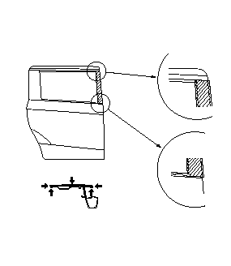

スライド ドア サッシュ テープの交換
•
ほこりなどがない場所で作業すること。
•
冬場（低温時）などは、ドライヤでドア サッシュおよびサッシュ テープを温めて作業すること。
-
ドア サッシュ:15°C前後
-
サッシュ テープ:30°C前後
•
サッシュ テープを温める際はテープの変形を防ぐため、一部を急激に加熱しないこと。
•
テープ圧着後、エアかみがあった場合は、針で穴をあけ、指やスキージでエアを抜くこと。
•
エアかみが10mm以上ある場合は、テープを貼り直すこと。
次の物を用意する。
•
プラスチック スキージ
•
ホワイト ガソリン、アルコールなど
•
ウエス
•
ドライヤ
•
マチ針
次の部品を取外す。
•
スライド ドア モール
•
スライド ドア センタ シール
•
スライド ドア ガラス ランチャンネル、必要分
•
スライド ドア タッチ センサ
古いサッシュ テープをドライヤで温めながら徐々にはがす。
ホワイト ガソリン、アルコールなどをウエスに含ませ、サッシュ テープ貼付け面を完全に脱脂する。
•
テープ貼付け面に接着剤が固着している場合は、ホワイト ガソリン、アルコールなどを充分染み込ませた後、指でこすりながら接着剤を取除く。
•
脱脂後は、汚れ、油脂、水分などを付着させない。
サッシュ テープを貼付ける。
5-1
サッシュ テープ末端の離型紙を少しはがす。
5-2
サッシュ テープをドア サッシュに合わせる。
5-3
平行度を確認しながら離型紙を徐々にはがしサッシュ テープを貼付ける。
5-4
スキージのフェルト側でサッシュ テープをドア サッシュに圧着する。
•
サッシュ テープは一気に巻込まない。
•
エアかみを起こさないよう徐々に行い、コーナ部から圧着する。
取外しておいた部品を取付ける。
ドア サッシュからボディ色が見えていないことを確認する。
水漏れテストを行う。
ホースの先端を絞って水をかけないこと。
